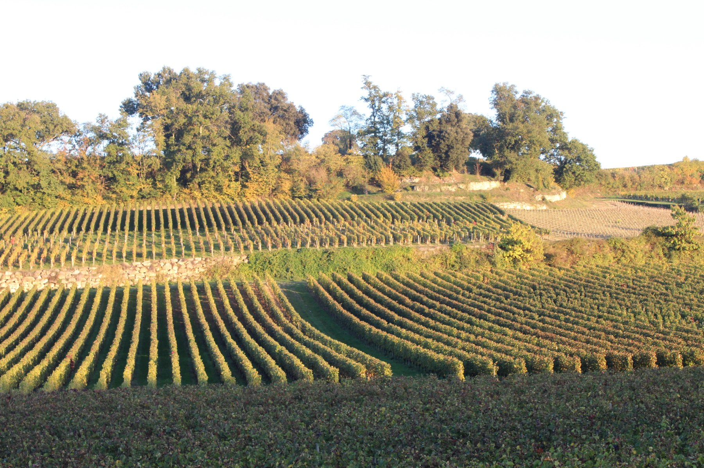

Le running français ne se contente plus du bitume. Selon le Baromètre du Running 2026, réalisé auprès de plus de 3 200 coureurs réguliers, 22 % des pratiques déclarées concernent désormais le trail ou la course sur sentiers. Un chiffre qui confirme ce que l'on observe aussi du côté de Montagne : de plus en plus d'adhérents troquent la route pour les chemins.
Ce n'est pas un hasard. Entre les vignes, les sous-bois et les petites côtes des coteaux, notre terrain de jeu se prête naturellement à cette pratique. Pas besoin d'aller courir en montagne pour goûter au plaisir du trail.
Pourquoi cet engouement ?

Le trail séduit pour plusieurs raisons. D'abord le paysage : on court pour découvrir un lieu autant que pour l'effort. Ensuite la douceur pour les articulations : un chemin en terre ou en herbe amortit mieux qu'un trottoir, ce qui change beaucoup sur la durée. Enfin, la variété des allures, la marche dans les montées, la prudence dans les descentes, oblige à courir plus à l'écoute de son corps, moins au chrono.
C'est aussi une pratique qui attire un public plus large qu'on ne le pense : pas besoin d'être un athlète confirmé pour se lancer sur un parcours vallonné de quelques kilomètres.
Route et trail, quelles différences concrètes ?
Sur route, la foulée est répétitive et prévisible. Sur chemin, chaque appui est différent : racines, cailloux, terre meuble. Il faut regarder où l'on pose le pied, ce qui sollicite davantage la proprioception et les muscles stabilisateurs de la cheville. C'est excellent pour le renforcement, à condition d'y aller progressivement.
Autre différence : on raisonne moins en vitesse qu'en temps d'effort. Sur un dénivelé, marcher vite dans une montée est souvent plus efficace que vouloir courir à tout prix. C'est une autre philosophie de la course, moins obsédée par l'allure au kilomètre.


Bien s'équiper pour débuter
Pas besoin d'un équipement complet pour une première sortie sur chemin. Les indispensables : des chaussures avec une semelle un peu plus accrocheuse que sur route, et éventuellement une petite ceinture ou ballon d'eau si la sortie dépasse une heure. Pour le reste, votre tenue de course habituelle fait très bien l'affaire.
Si vous hésitez sur le choix des chaussures, notre article sur les nouveautés chaussures 2026 aborde aussi les modèles pensés pour les terrains mixtes.
Se lancer avec le club

La meilleure façon de découvrir le trail reste de le faire accompagné. Sur nos sorties du dimanche, une partie du parcours emprunte déjà des chemins entre les vignes et les coteaux. C'est l'occasion idéale de tester des appuis différents, à un rythme de groupe, sans prendre de risque.
Et si l'envie de dénivelé et de sentiers vous gagne pour de bon, notre propre course, le Trail des Vignes, sera là pour vous donner un premier objectif accessible sur nos terres.
Alors, prêts à quitter le bitume, ne serait-ce que pour une sortie ?